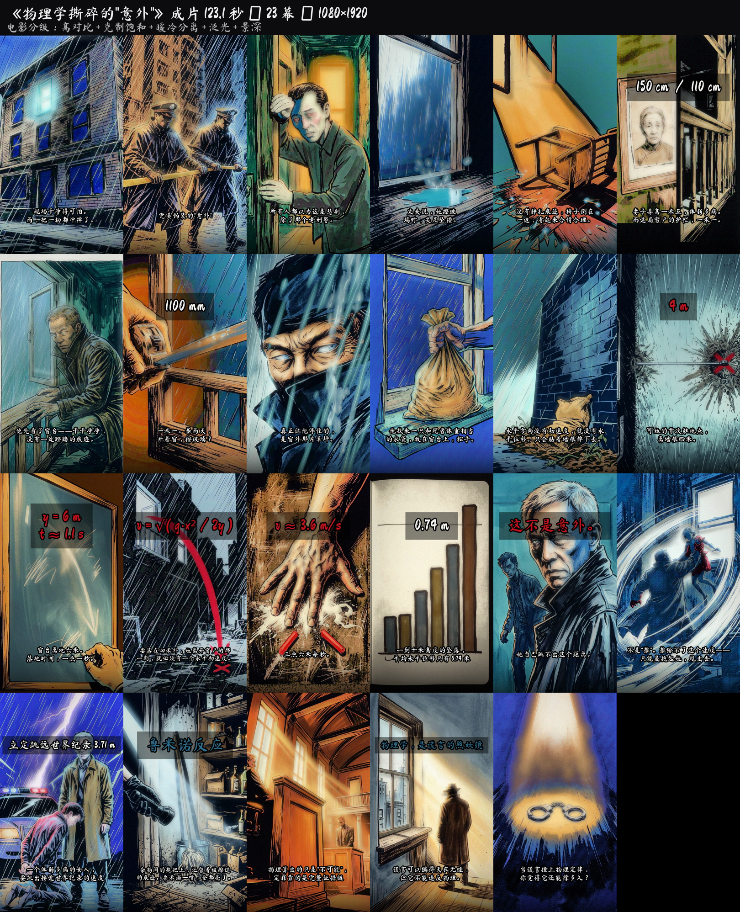

影片规格 ／ 逐幕抽帧核验过
- 时长
- 123.1 s
- 画布
- 1080 × 1920 (9:16)
- 帧率
- 30 fps
- 编码
- H.264 + AAC
- 幕数
- 23 幕，每幕一图快切
- 字幕
- 画面下方硬字幕
- 音轨
- 峰值 −0.6 dB，全程有声
- 合规
- 片头片尾均有声明
全片画面 ／ 从成片逐幕抽帧

关于真实性：剧情为虚构。检索过多个真实案例，没有与剧本吻合的单一案件 ——
这也是片中标「综合多起案件」的原因。取证与物理推理部分按真实方法编写
（Rizer 1965 的落点验算法、《法医学杂志》2022 年 614 例高坠统计、立定跳远世界纪录）。